Jeg er en Multimediedesign studerende fra danmark. I 2018 dimitterede jeg fra EUX i Køge med Studenterhue og et svendebrev som murer.
Herefter har jeg arbejdet som vikar i 2 børnehaver, opholdt flere centre hos FitnessWorld, tjent min værnepligt i Forsvaret hos Oksbøl Kaserne
Kreativt arbejde har beskæftiget mig store dele af mit liv. Derfor læser jeg nu på Zealand, hvor jeg har plads til at udtrykke mig mere specifikt!
